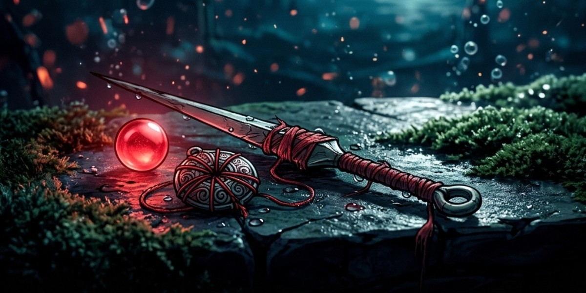

Geekotidien · Édition du 26 novembre 2026
Silksong : Sea of Sorrow
Un livestream « Cherry Time! » annoncé pour le 27 novembre

Team Cherry annonce un livestream intitulé « Cherry Time! », diffusé le 27 novembre 2026 à 7 h (heure de Los Angeles), soit 10 h à New York et 15 h GMT. Il doit présenter une mise à jour du DLC Hollow Knight: Silksong - Sea of Sorrow, selon GamesRadar.
Le DLC avait été annoncé peu après la sortie de Silksong. Sa date de sortie avait disparu depuis, et Team Cherry avait promis davantage d'informations « shortly before » sa sortie.
Le contenu précis du livestream n'est pas détaillé. Team Cherry évoque des « annonces passionnantes », sans en dire plus.
Le + : L'annonce vient d'un post officiel de Team Cherry, mais le contenu du livestream reste inconnu.